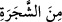
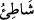

İşte evliyâullâhın tecelliyât mahalleri de böyledir.
“ ifâdesi; “ kelimesinden bedel-i iştimâl’dir. Çünkü burası vâdînin
kenarında idi ve bu ümmet zamanına kadar bâkî kalmıştır. Nitekim Keşfü’l-esrâr’da da
bu şekilde kaydedilmiştir.
Süheylî’nin, et-Ta’rîf ve’l-a’lâm adlı eserinde naklettiğine göre, bu ağaç üzüm,
semüre, sidre, zeytin ya da avsec ağacıdır. Avsec ağacı büyüdüğü zaman “garkad” adını
alır. Hadiste“Bu yahûdilerin ağacıdır ve konuşmaz.”[101] buyrulmuştur. Yâni İsâ (a.s.)
yeryüzüne inip yahûdîleri öldüreceği zaman, onlardan hiçbiri gizlenemeyecek; hangi
ağacın altına girseler, o ağaç dile gelip: “Ey müslüman, işte yahûdi, onu öldür”
diyecektir. Ancak “garkad” isimli ağaç yahûdilerin ağacı olduğu için konuşmayacak ve
arkasına gizlenenleri haber vermeyecektir.
“” müfessire olup ne şekilde seslenildiğini açıklar. Yani, “(oradaki) ağaç tarafından
kendisine şöyle seslenildi: “Ey Mûsâ! Bil ki” sana nidâ eden ve seslenen, seni isminle
çağıran “ben, bütün âlemlerin” ve bütün mahlûkatın Rabbi olan Allah’ım.” Bu, Allah
Teâlâ’nın Mûsâ (a.s.)’a söylediği ilk kelâmıdır. Her ne kadar Tâhâ ve Neml
sûrelerindeki âyetlerin lâfızları farklı olsa da, kasdedilen mânâ aynıdır.
Kâşifî der ki: Mûsâ (a.s.) ağaca baktı, dumansız beyaz bir ateş gördü. Gönlüne nazar
etti, Yüce Mabud’un cemâlinin şevkinin şulesini müşâhede etti. Ateşteki bu
müşâhededen vücudunun/bedeninin şem’i/mumu neredeyse tamamen yanacaktı.
Bende yanan bir ateş var, ancak ne olduğunu bilmiyorum
Şu kadar biliyorum ki mum gibi beni eksiltmektedir.
Mûsâ (a.s.), “Ey Mûsâ!” nidâsını işitince, aşktan yandı ve cemâl şevkinden eridi;
ağacın önünde durdu. O nidânın mazmunu, “Bil ki ben, bütün âlemlerin Rabbi olan
Allah’ım” âyeti idi.
Keşfü’l-esrâr’da der ki: O ağacın altında Mûsâ (a.s.)’ın sıfatları dağılmış, zâtı
(varlığı) fânî hale gelmiş ve bütün âzâsı kulak kesilmişti. Allah tarafından nidâ geldi.
Bunun üzerine kurbet hil’atini giydi, ülfet şarabını içti, vuslat sedirine oturdu ve rahmet
reyhanını kokladı.
Ey gönlü yanmış âşık! Gam çekme!
Gün gelir âşıklar murâdına erer.
Bazıları demiştir ki: Mûsâ (a.s.), ağacın yanına varınca, ateş gitti ve yalnızca nûr
kaldı. Mûsâ (a.s.) kendinden geçti. Zât ağacından, sıfât sesleriyle Mûsâ (a.s.)’a nidâ
olundu. Dağ, tecellî ve kelâmın etkisinden dolayı simsiyah bir taşa (akîk) döndü. Mûsâ
(a.s.) bayıldı. Allah Teâlâ ona melekler gönderdi; onlar da onu ünsiyet yelpâzesi ile
serinletip rahatlattılar. Ve ona şöyle dediler: “Ey Mûsâ, yoruldun; dinlen. Ey Mûsâ,
matlûbuna eriştin; ayrılma. Sonra sana takdir edilen bir vakitte geldin ey Mûsâ!”; yâni